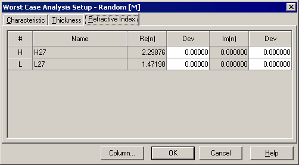

Refractive Index Error Worst Case Analysis Setup
Refractive Index Errors Worst Case Analysis Setup Procedure
The Refractive Index page of the Worst Case Analysis Setup window allows setting refractive index deviations and starting the Worst Case Analysis.
The maximum allowed deviations of refractive indices Re(n) and extinction coefficients Im(n) are entered as a percentage.

To specify the maximum allowed deviations for any layer material, select the corresponding cell in the columns labeled Dev next to either Re(n) or Im(n).
The Column… button allows easy access to the Column Editor.
The OK button accepts the specified values and starts the Worst Case Analysis procedure. Its results are displayed in the Worst Case Analysis window.
See also: